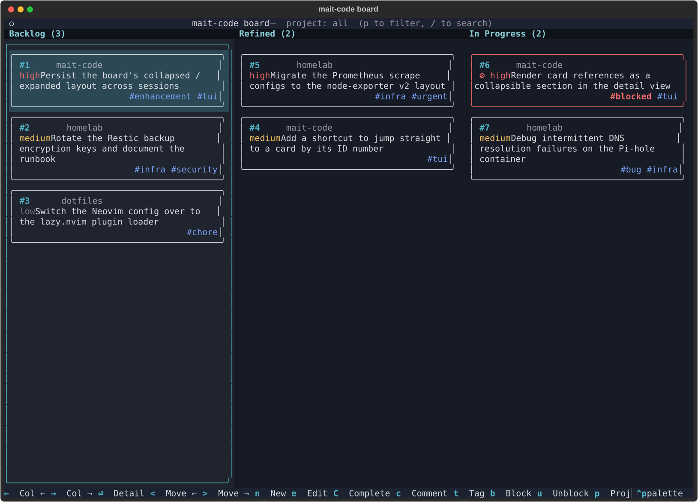
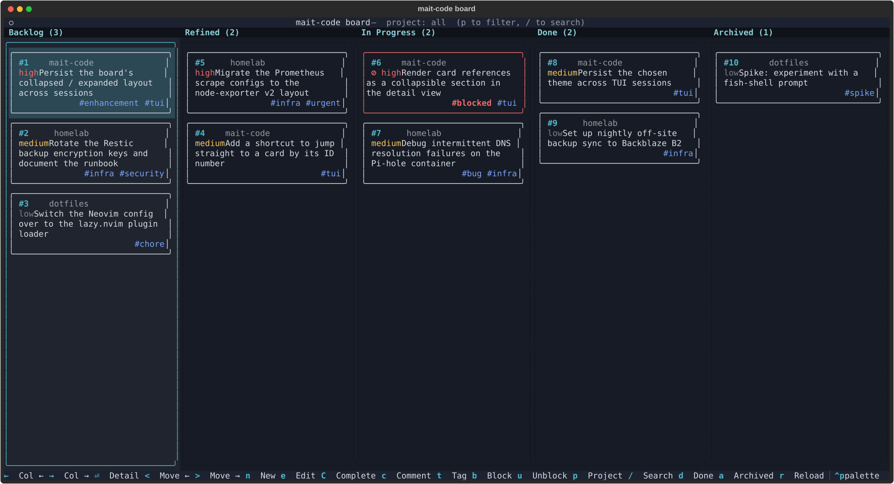
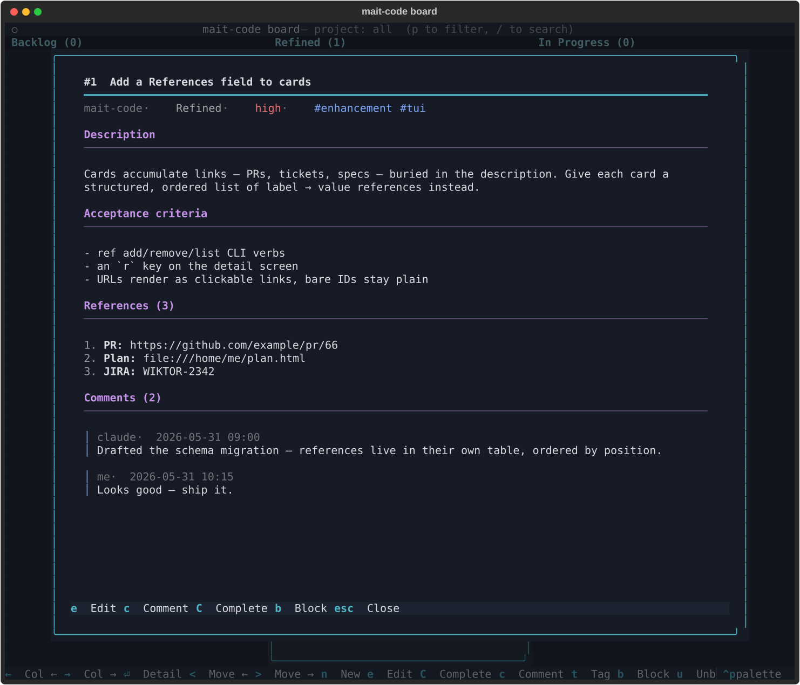

The board¶
The board is a lightweight kanban that lives alongside your code. Cards capture work — a bug, an idea, a half-formed feature — and flow through fixed columns as you and Claude turn them into shipped changes. It is the spine of a reactive way of working: instead of writing a long plan up front, you jot a card, refine it when you get to it, and let Claude pick it up and do the work in the same session.

Why use it¶
A plan written before you understand the problem is a guess. The board lets you defer that guess: park a rough idea in Backlog, sharpen it into a crisp Refined card only when you're about to act on it, and keep the act of deciding what to do separate from the act of doing it. The payoff is a tighter, more interactive loop — less ceremony, more momentum — and a durable record of what was done and why, because every completed card carries a handoff summary.
The board spans every project. One store, filtered by project, so an idea you have while working on repo A doesn't get lost when you switch to repo B.
The mental model¶
The board is manually driven, and Claude is the worker. There is no background dispatcher quietly shuffling cards — nothing moves unless you ask for it. You decide what gets refined, what gets picked up, and what gets completed; Claude does the refining and the building when you say so, and never moves, completes, or archives a card on its own.
That distinction matters. The board isn't a notification system nagging you about work — it's a shared surface the two of you reason over together.
The lifecycle¶
Cards flow through four fixed columns, with one hidden side-state:
flowchart LR
B[Backlog] --> R[Refined] --> P[In Progress] --> D[Done]
D -. archive .-> A[Archived]
P -. park .-> A| Column | Meaning |
|---|---|
| Backlog | Raw, unrefined ideas. Where new cards land. |
| Refined | Has a clear description and acceptance criteria. Ready to be picked up. |
| In Progress | Actively being worked in the current session. |
| Done | Finished, with a completion summary. Hidden by default — press d to show. |
| Archived | Parked out of sight without deleting. Hidden by default — press a to show. |
You don't have to march cards through every column in order — you can move a card
anywhere via the CLI — but backlog → refined → in_progress → done is the
intended grain, and following it is what makes the workflow pay off.
Blocked is a tag, not a column
A blocked card keeps its real column — a blocked refined card stays in
Refined. Blocking just attaches a blocked tag (and records the reason
as a comment), so you never lose track of where a card was when it stalled.
blocked is just the most common of the free-form tags any card can carry.
Collapsed for work, expanded for review¶
By default the board shows only the live columns — Backlog, Refined, and In Progress. This collapsed view is the working layout: it keeps the three columns you actually act on wide and uncluttered, with finished and parked work tucked out of sight so it can't pull your attention.
Press d and a to reveal Done and Archived — the full five-column view:

This expanded layout is for admin and reflection, not for getting work done:
reviewing what's shipped, re-reading completion summaries, sweeping stale cards
into the archive, and taking stock of how much has moved. Step back into it when
you want the whole picture; collapse it again (d, a) when you want to get back
to the flow.
Two ways in¶
There are two ways to drive the board, and they share the same store — changes in one show up in the other.
The TUI¶
Open the interactive board with:
This is a full-screen Textual app: arrow keys
to move around, single-key shortcuts to act on cards, Ctrl+P for the command
palette, and live theming. It's the best way to see the state of your work at a
glance and to do bulk triage by hand.
When you're not on a terminal that supports it (e.g. piping output, or in CI),
mait-code board falls back to a read-only text render of every project's board.
The conversation¶
The more transformative path is to drive the board through Claude. Just talk:
- "What's on the board?" — Claude shows you the current cards.
- "Refine card 12." — Claude drafts a description and acceptance criteria, shows them to you for approval, then moves the card to Refined.
- "Pick up the next refined card." — Claude claims the highest-priority refined card, moves it to In Progress, reads its acceptance criteria, and gets to work — all in the same session.
- "That's done." — Claude completes the card with a summary of what changed.
This is the loop that replaces up-front planning: refine just-in-time, pick up, build, complete, repeat.
A session, end to end¶
A typical board-driven session looks like this:
- Capture. Something occurs to you mid-task — "the toast colours wash out on the ember theme." You say so; Claude offers to add a card, you confirm, and it lands in Backlog. You don't break your flow to act on it.
- Refine. Later, you're ready to tackle it: "refine the toast-contrast card." Claude drafts a description and acceptance criteria and shows them to you. You tweak the criteria, approve, and the card moves to Refined.
- Pick up. "Take the next refined card." Claude claims it — moving it to In Progress — reads the acceptance criteria you both agreed on, and starts implementing against them.
- Track. As work progresses, comments and references accrue on the card: a
link to the PR, a note about a tricky edge case. If something stalls, "block
it — waiting on the upstream fix" tags it
blockedin place. - Complete. When the acceptance criteria are met: "complete it, summary: re-derived chip colours from the theme palette." The card moves to Done, stamped with the time and the handoff summary.
The acceptance criteria written at step 2 are the contract for steps 3 and 5 — which is exactly why refining before picking up is worth the small ceremony.
Anatomy of a card¶

Every card carries:
| Field | Notes |
|---|---|
| Title | Required. The one-line summary. |
| Project | Required at creation. Which repo (or idea) the card belongs to. |
| Priority | low, medium (default), or high. Drives pick-up order. |
| Description | Free text. The "what and why". |
| Acceptance criteria | Free text. The contract for done. Usually set when refining. |
| References | An ordered list of label → value links — a PR, a ticket, a file, a spec. Kept out of the description so they stay tidy and clickable. |
| Tags | Free-form labels that ride alongside status (blocked, urgent, …). |
| Comments | A threaded log — your notes and Claude's, each timestamped. |
| Completion summary | The handoff note recorded when the card reaches Done. |
References deserve a mention: they're a recent addition for keeping a card's
links structured rather than buried in prose. A value that looks like a URL
(https://…, file://…) renders as a clickable link in the TUI; a bare
identifier like JIRA-2342 stays as plain text. Manage them in a card's edit
form (press e on the detail screen), or with the ref CLI commands.
TUI reference¶
Board view¶
| Key | Action |
|---|---|
| ← / → | Focus the previous / next column |
| ↑ / ↓ | Highlight the previous / next card |
| 1–5 | Jump straight to a column |
| Enter | Open the highlighted card's detail screen |
| n | New card |
| e | Edit the highlighted card |
| c | Add a comment |
| C | Complete the card (prompts for a summary) |
| t | Add / remove a tag |
| b / u | Block / unblock |
| < / > | Move the card left / right through the flow |
| p | Filter by project (dropdown picker) |
| d | Toggle the Done column |
| a | Toggle the Archived pane |
| r | Reload the board from disk |
| Ctrl+P | Command palette (incl. theme switching) |
Card detail screen¶
| Key | Action |
|---|---|
| e | Enter edit mode |
| Ctrl+S | Save changes (in edit mode) |
| Esc | Close the screen / cancel an edit |
| c | Add a comment |
| C | Complete the card |
| b / u | Block / unblock |
The edit form (e) is the single place a card is changed: title,
priority, status, tags, references, description and acceptance
criteria all live on one form. Tags, references and status are a working copy —
Save (Ctrl+S) applies them all at once, and Esc
discards every pending change. Block / unblock stay outside the form (they carry
a reason comment a plain tag can't), so the form's tag editor leaves the
blocked tag alone.
Theming
The board ships several house themes (mait-dark, mait-ember,
mait-aurora, mait-bubblegum, mait-syntax) plus Textual's built-ins.
Switch via Ctrl+P → search theme. Your choice
persists across sessions.
CLI reference¶
The TUI is a front-end over the mc-tool-board command, which you (or Claude)
can call directly. The same store backs both.
# View
mc-tool-board list [--all] [--status STATUS] [--archived] [--json]
mc-tool-board show ID [--json]
mc-tool-board summary [--all] [--project PROJECT] [--json]
# Create & edit
mc-tool-board add "<title>" [--description ...] [--priority low|medium|high] [--project ...]
mc-tool-board edit ID [--title ...] [--description ...] [--priority ...] [--acceptance ...]
mc-tool-board comment ID "<note>" [--author me|claude]
# Flow
mc-tool-board refine ID [--description ...] [--acceptance ...] # → refined
mc-tool-board next [--project ...] [--claim] [--json] # top refined card; --claim → in_progress
mc-tool-board complete ID --summary "<what was done>" # → done
mc-tool-board move ID <backlog|refined|in_progress|done|archived>
mc-tool-board archive ID # hide without deleting
mc-tool-board remove ID # permanent delete
# Tags & blocking
mc-tool-board tag ID <tag> / mc-tool-board untag ID <tag>
mc-tool-board block ID "<reason>" / mc-tool-board unblock ID
# References
mc-tool-board ref add ID <label> <value>
mc-tool-board ref remove ID <position>
mc-tool-board ref list ID [--json]
--json on the read commands gives machine-readable output — handy for scripting
or for Claude to consume.
Tips for getting the most from it¶
- Capture freely, refine sparingly. Backlog is cheap; a card you'll never act on costs nothing. Only spend effort refining when you're about to do the work — that's the whole point of deferring the plan.
- Write acceptance criteria you'd accept. They're the contract Claude builds against and the bar for completion. Vague criteria, vague results.
- Let Claude claim the next card.
pick up the next refined cardrespects priority then age, so the board decides what's most important — you don't have to. - Use references, not description links. A
PR → https://…reference stays clickable and structured; the same URL pasted into the description is just text. - Complete with a real summary. The handoff note is what makes Done a record rather than a graveyard — future-you (and Claude) will read it.
- Block in place. When work stalls, block it rather than dragging it back to Backlog. You keep the context of where it was and why it stopped.